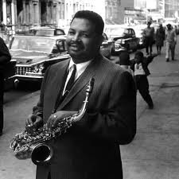
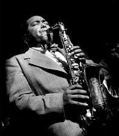
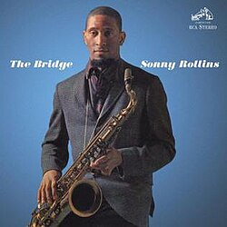

El Saxofon
El saxofón es un instrumento de viento-madera inventado en 1846 por el belga Adolphe Sax. Aunque está hecho de metal, se clasifica como madera porque produce sonido mediante una caña (como el clarinete). Se caracteriza por su gran expresividad y capacidad para adaptarse a distintos estilos. Existen varios tipos, pero los más comunes son el soprano, alto, tenor y barítono, cada uno con su registro y color particular. El saxofón se usa en música clásica, jazz, rock y pop, siendo especialmente importante en el jazz. Algunos referentes clave del instrumento incluyen a Charlie Parker, pionero del bebop; John Coltrane, conocido por su innovación armónica; y Stan Getz, famoso por su sonido suave en la bossa nova. En la música clásica también destacan compositores como Alexander Glazunov, que ayudaron a incorporar el saxofón en el repertorio académico. Hoy en día, el saxofón es un instrumento fundamental tanto en ensambles como en solistas, valorado por su versatilidad y riqueza sonora.
SAXOFONISTAS RECONOCIDOS
Paul Desmond

Cannonball Adderley

Charlie Parker
.jpg)
John Coltrane
